DIR842-qemu
条评论DIR842 A1 qemu 模拟
需要的 qemu 文件：debian_squeeze_mips_standard.qcow2，vmlinux-2.6.32-5-4kc-malta
首先修改一下自己虚拟机的IP，C段设成0，比如：192.168.0.142
然后使用命令：
1 | # brctl addbr Virbr0 |
这里设置为 192.168.0.??? ，是有原因的，后面会说。
完成如下图。
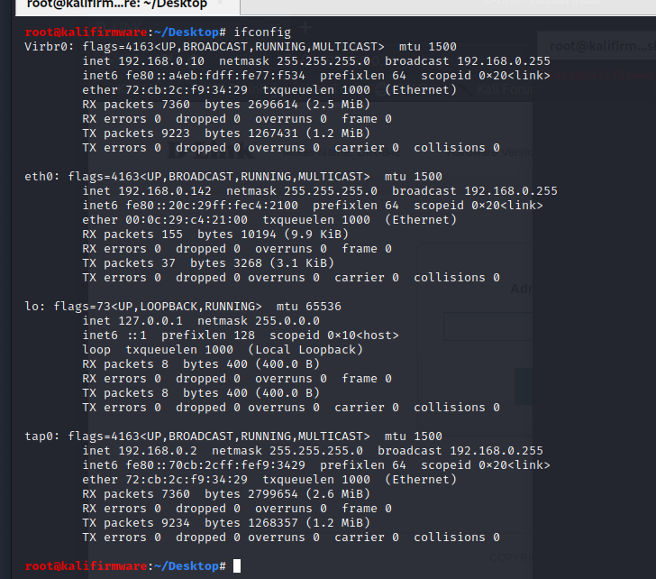
启动 http 服务
qemu启动起来后，设置IP地址：ifconfig eth0 192.168.0.1/24
然后把DIR842的文件系统丢进去，然后操作命令。
1 | mount -o bind /dev ./squashfs-root/dev/ |
接着参考之前的文章做法：CVE-2017-17215 - 拓展
把编译好的hook.so，测试程序test都放到 /var/tmp/ 下。在 /etc/ 目录下还是写一个 ld.so.preload文件，内容如下。
1 | /lib/libdl.so.0:/tmp/hook.so |
然后设置环境变量 export LD_PRELOAD=/lib/libdl.so.0:/tmp/hook.so
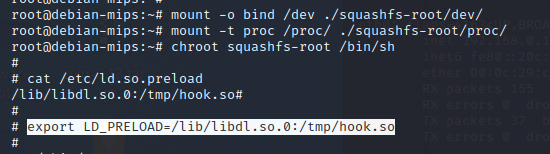
因为要启动http的服务，得找到哪个程序是http服务，或者是与http服务有关的。寻找一番，在 /sbin/ 目录下看到有 ncc2 和 jjhttpd 。看名字jjhttpd多半与http服务有关。 ncc2 可能是启动http服务的。
那么，直接运行 ncc2 : ./sbin/ncc2 ，会看到ncc2运行起来会输出一大片。在最后部分会看到如下输出。
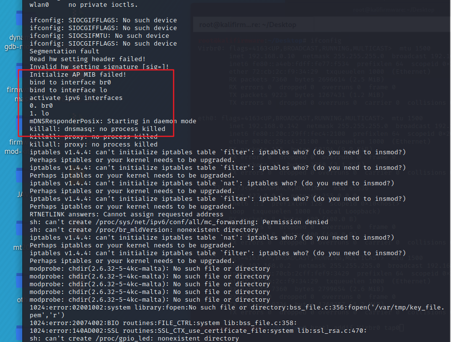
ifconfig查看一下多了个 网桥。
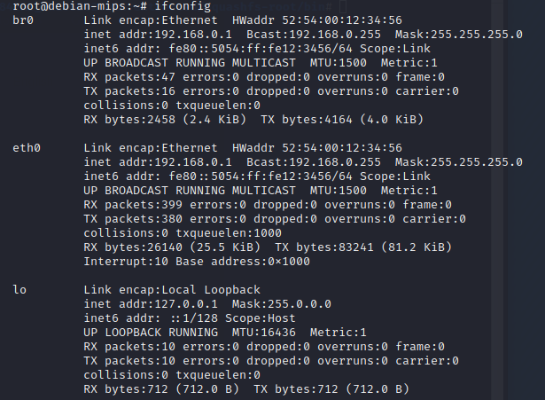
这样的情况，在之前遇到过。这个时候呢，修改下eth0 ，br0 的IP。
1 | ifconfig eth0 192.168.0.1/24 |
接着去浏览器试试访问 192.168.0.1
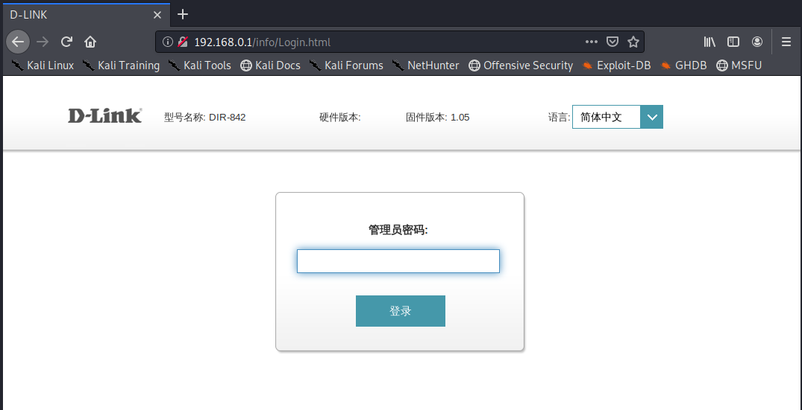
可以看到http服务模拟成功。开始的时候，需要我们配置，但是我跳过了配置，所以这里的管理员密码为空。
这里之所以把IP都限制在C段地址为0开始，是因为ncc2程序执行完之后，它创建的网桥br0是192.168.0.1。如果把br0和eth0改成192.168.153.1或者其他的C段，且外面主机也是192.168.153.xxx 段的。按道理说，qemu与外面是互通的，但是实际实验发现qemu模拟的http无法与外面是不通的，qemu也Ping不通外面宿主机。不知道其中的原因。
DIR842 最新版
地址：https://support.dlink.com/ProductInfo.aspx?m=DIR-842
在D-link官网上找到的2019-12月的版本3.13。
最新版的DIR842固件版本已经是升到C系，从上述连接中下载到3.13B05，用 binwalk 进行解包，发现binwalk不认识，解不了。
这个时候，根据经验猜测它肯定加密了。
如果看过这篇文章：https://www.thezdi.com/blog/2020/2/6/mindshare-dealing-with-encrypted-router-firmware
那么，我们的思路就是从C系列的最基础版本开始，依次用Binwalk解包试试。
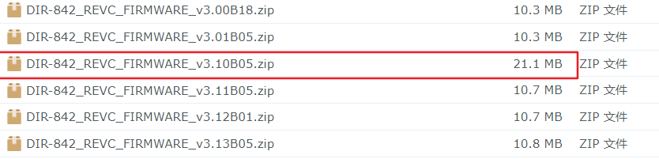
尝试之后发现，binwalk可以解出 DIR-842_C1_FW300b18.bin 。这个时候，可以看到 DIR-842_REVC_FIRMWARE_v3.10B05 这个版本大小很不正常。它比其他版本都大。
根据这些结果，能确定 DIR-842 C 系列，它的发现方式是：最初版本不加密，后来要加密，所以需要发布一个中间过渡版本，即就是 842_REVC_FIRMWARE_v3.10B05 ，它之所以20M多，就是多一个中间过度版。这个过渡版本，肯定是不加密的，而且一定包含了解密的程序。
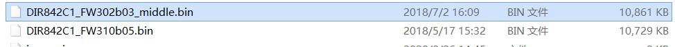
DIR842C1_FW302b03_middle.bin 看名字就知道是过度版，用binwalk 解包，果然是能解开的。
而 DIR842C1_FW310b05.bin 就是过版本后的第一个加密了的固件包。后面会用到它进行解密尝试。
寻找解密程序
解开了过度版DIR842C1_FW302b03_middle.bin，这里面肯定有用于解密的程序。因为固件更新的时候，肯定是需要解密的。那么，来 find 命令找一下，找关键字 decr ， decrypt 等。
1 | find squashfs-root/ | grep -r "decr" > decrypt |
得到结果如下。
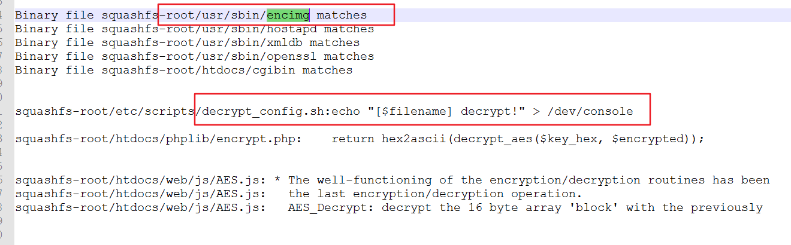
注意观察红框：encimg ， decrypt_config.sh
用 chroot 切换到 squashfs-root 下，然后执行 encimg 看看效果。
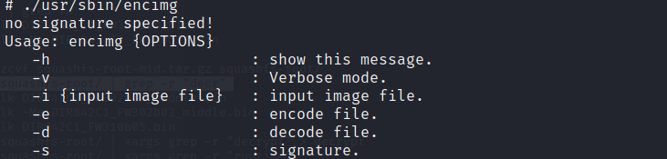
看，找到了，这就是解密固件程序。现在，仔细看看它的参数。
1 | ./usr/sbin/encimg： |
这的参数不需要多解释，特别的是 -s ，这是一个签名。如果我们直接用命令：
./usr/sbin/encimg -i DIR842C1_FW310b05.bin -d
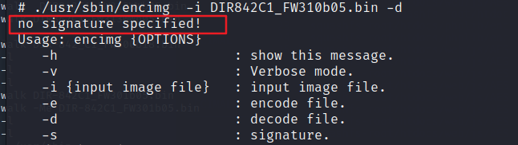
会报错，需要一个参数S，也就是需要签名。 注意，这里我用的 DIR842C1_FW310b05.bin 来尝试，而不是用的 最新的3.13版本。我的考虑是，解密需要签名，那这个签名可能是会变的。所以先用和过度版一起发包的第一个加密版本固件进行实验。
这里可以把 encimg 丢到 Ghidra 中看看。
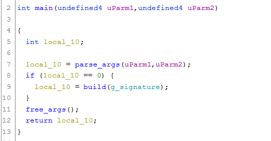
这里有2个主要函数 parse_args ，build 。我简单说一下它们的作用。
- parse_args ：读取输入参数，其中 -s 参数会被保存到 g_signature ，若为 0 ，就会报no signature specified!
- build：会使用 g_signature 作为解密的密钥，对固件进行解密。
所以 -s 参数必须有。
寻找签名
已经确定了 encimg 就是解密程序，现在缺签名。 还记得前面说到 decrypt_config.sh 这个文件吗。打开看看。
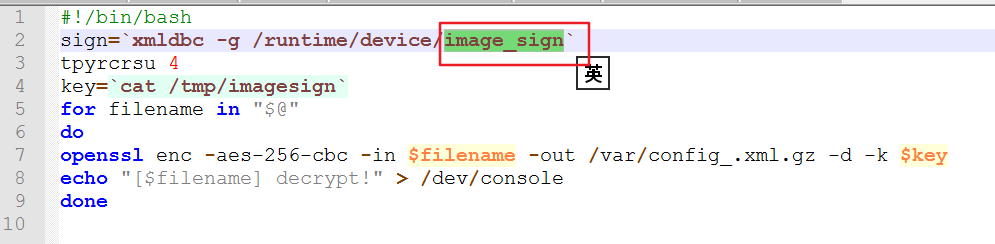
这里，可以看到有个 sign ，key 。最后 key 的内容来自 /tmp/imagesign。
这里提供了2个与签名可能有关系的关键名字： imagesign image_sign
继续用 find 来查找
1 | find squashfs-root/ | grep -r "imagesign" > imagesign |
幸运的是在 image_sign 中看到了如下的一句代码。
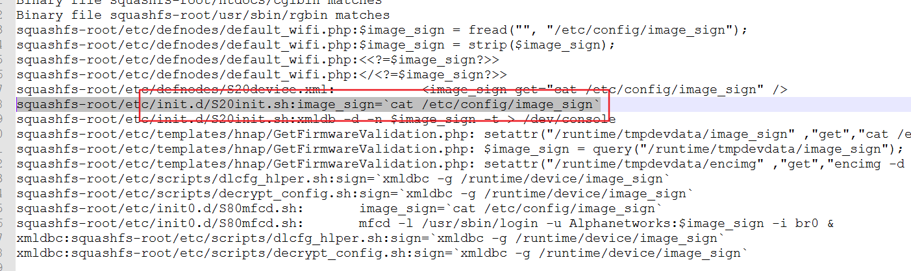
直接去 etc/config/ ，看看有没有文件 image_sign。
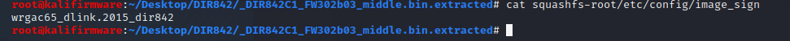
试试这个 wrgac65_dlink.2015_dir842 作为 -s 参数。
1 | # ./usr/sbin/encimg -i DIR842C1_FW310b05.bin -d -s wrgac65_dlink.2015_dir842 |
这次，用 binwalk 解包试试。
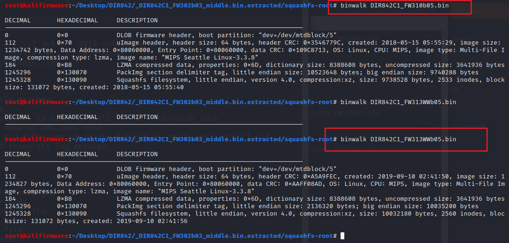
根据上图可以得知，wrgac65_dlink.2015_dir842 这个签名，对目前最新版的固件也是适合的。证明签名没有变化。
实际上签名在 /et/config/fw_sign 文件中也存在。